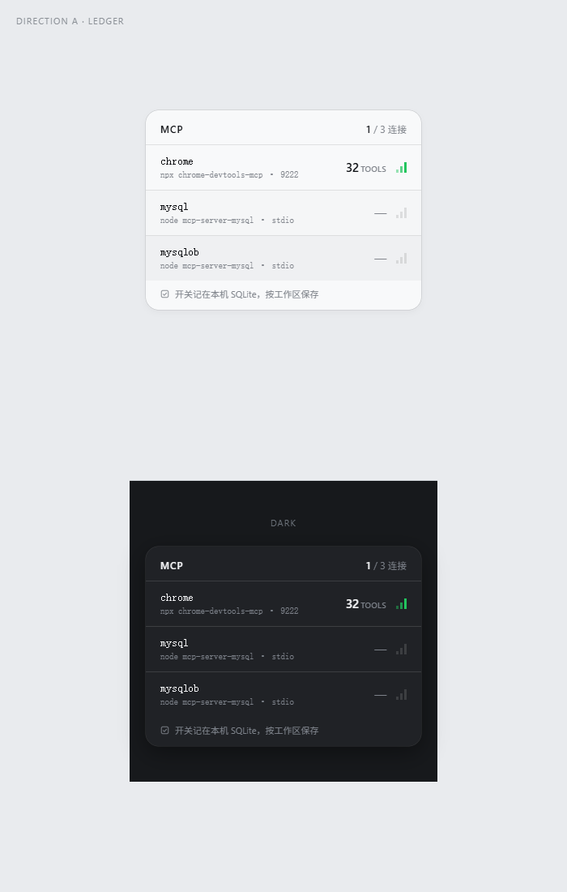
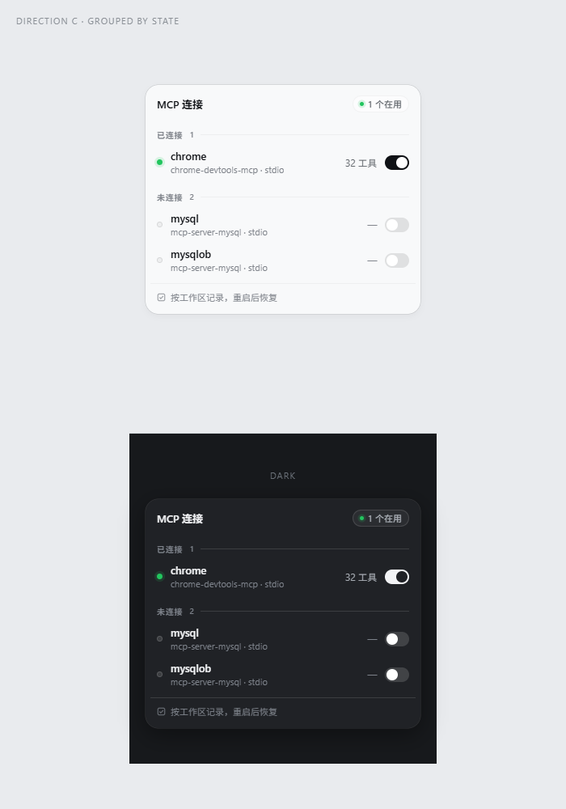
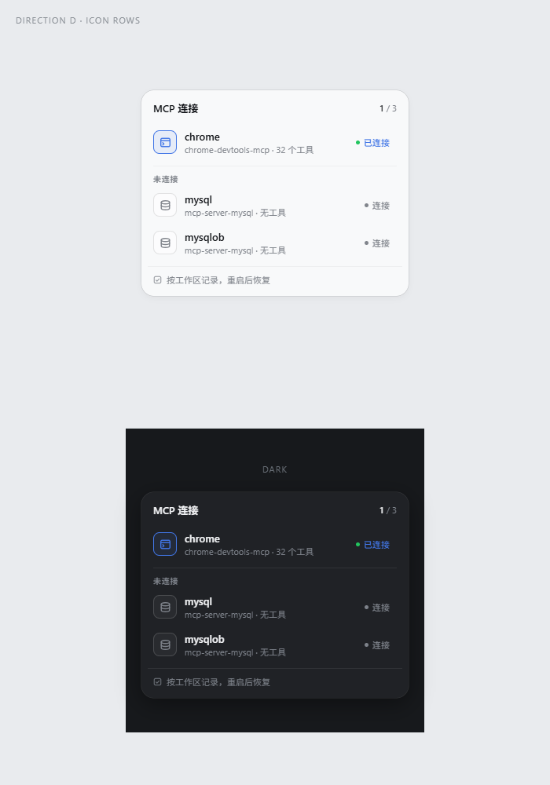

同一份内容、同一种尺寸（340px），只换设计骨架。亮色在上、暗色在下。

骨架：一条硬左轴、发丝线分栏，只有两级字号。
胆量：工具数做成行内最大的数字——它是「真连上了」的唯一证据。
气质：冷静、机械，像机房台账。

骨架：按「已连接 / 未连接」分组，组内 44px 行。
胆量：列表不按字母排，按答案排——打开就知道谁活着，不用逐行读。
气质：现代、克制。

骨架：每行一个 30px 图标位，图标描边就是状态色。
胆量：按 transport 给每台服务器不同图形，三行先靠脸分辨。
气质：亲和、可扫。